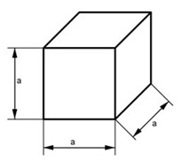
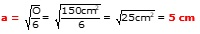

Aufgabe 2 25cm2 68cm33 Welche Seitenlänge a hat ein Würfel a) mit dem Volumen V = 64 cm3? b) mit der Oberfläche = 150 cm2?  a) V = a3 b) O = 6 * a2 | :6 O --- = a2 |√ 6 
Aufgabe 2 25cm2 68cm33 Welche Seitenlänge a hat ein Würfel a) mit dem Volumen V = 64 cm3? b) mit der Oberfläche = 150 cm2?

